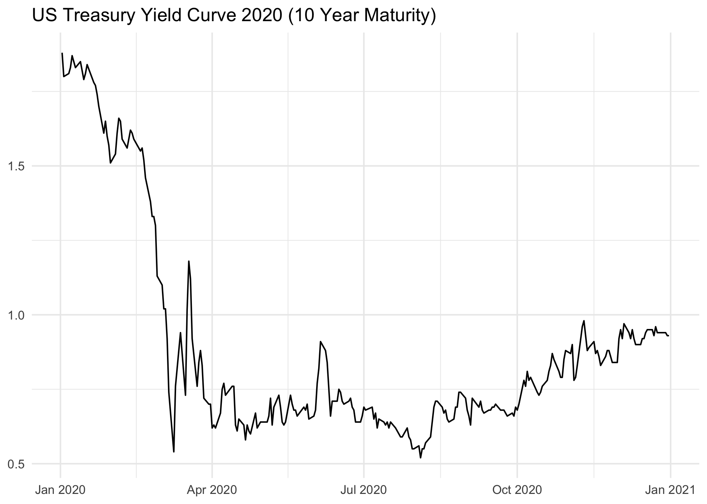

Overview
The goal of treasury is to provide a simple and modern interface to the US treasury XML feed for daily interest rates. The main difference to other packages is that it’s a modern implementation using the httr2 package.
Installation
You can install the development version of treasury from GitHub with:
# install.packages("pak")
pak::pak("m-muecke/treasury")Usage
treasury functions are prefixed with tr_ and follow the naming convention of the XML feed.
library(treasury)
yield_curve <- tr_yield_curve(2020)
yield_curve
#> # A tibble: 3,012 × 3
#> date maturity rate
#> <date> <chr> <dbl>
#> 1 2020-01-02 1 month 1.53
#> 2 2020-01-02 2 month 1.55
#> 3 2020-01-02 3 month 1.54
#> 4 2020-01-02 6 month 1.57
#> 5 2020-01-02 1 year 1.56
#> 6 2020-01-02 2 year 1.58
#> 7 2020-01-02 3 year 1.59
#> 8 2020-01-02 5 year 1.67
#> 9 2020-01-02 7 year 1.79
#> 10 2020-01-02 10 year 1.88
#> # ℹ 3,002 more rows
library(ggplot2)
subset(yield_curve, maturity == "10 year") |>
ggplot(aes(x = date, y = rate)) +
geom_line()
Related work
- ustyc - R package to download and parse the US Treasury yield curve data